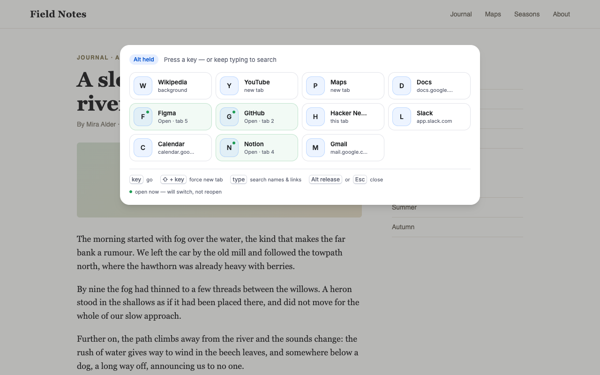
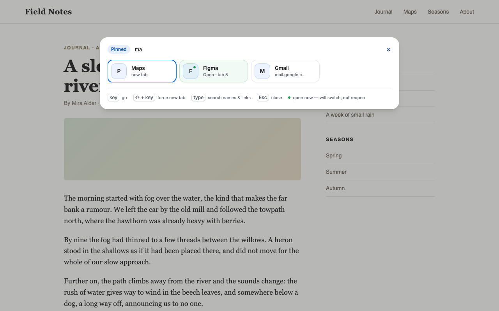
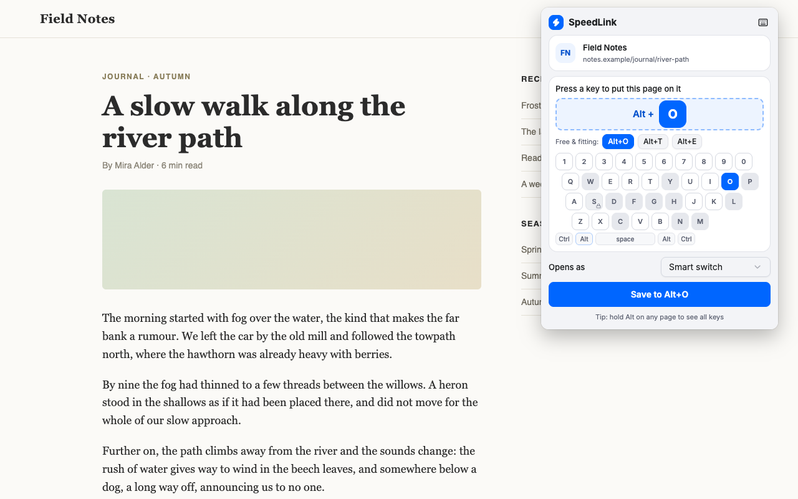
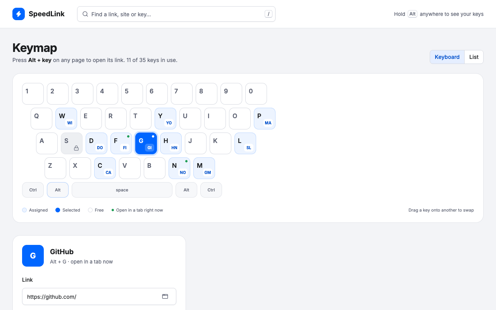

Put your sites on keys.
Hold ⌥ (Alt) and press a key to open a site, or jump to the tab where it’s already open.
Add to Chrome
Free
⌥on a Mac,Alton Windows, Linux and ChromeOS
Hold ⌥ (Alt) and press a key to open a site, or jump to the tab where it’s already open.
⌥on a Mac,Alton Windows, Linux and ChromeOS

Click the toolbar icon; SpeedLink suggests a free key that fits the site.
On any page.
If the site is already open, you jump to that tab. If not, it opens.
Hold ⌥ for a moment and your keys appear over the page. Press one to go, or let go to close. A dot marks sites that are open right now.
Press ⌥S to pin the overlay and search by name or link.

Click the toolbar icon to put the page you’re on on a key. A toast offers Undo.

Edit a shortcut, drag one key onto another to swap, or search with “/”.

Coming from SpeedLink 1?Your keys come over on update. Nothing to set up again.
Private by design.Your keymap stays in your browser and syncs only through Chrome’s own sync. No data collected, no analytics. Privacy policy